进程间通信
第8章说明了进程控制原语并且观察了如何调用多个进程 但是这些进程之间交换信息的唯一方法是经由fork或exec传送打开文件，或通过文件系统 本章将说明进程之间相互通信的其他技术IPC
UNIX IPC 已经是而且继续是各种 进程通信方式 的统称，其中极少能在所有UNIX的实现中进行移植。下表列出了不同实现所支持的不同形式的IPC：
| IPC类型 | POSIX.1 | XPG3 | V7 | SVR2 | SVR3.2 | SVR4 | 4.3BSD | 4.3+BSD |
| 管道(半双工) | • | • | • | • | • | • | • | • |
| FIFO(命令管道) | • | • | • | • | • | • | ||
| 流管道(全双工) | • | • | • | • | ||||
| 命令流管道 | • | • | • | • | ||||
| 消息队列 | • | • | • | • | ||||
| 信号量 | • | • | • | • | ||||
| 共享内存 | • | • | • | • | ||||
| 套接口 | • | • | • | |||||
| 流 | • | • |
正如上表所示，不管哪一种UNIX实现，都可依靠的唯一一种IPC是 半双工的管道
表中前7种IPC通常限于同一台主机的各个进程间的IPC 最后两种：套接口和流，则支持不同主机上各个进程间IPC 虽然中间三种形式的IPC(消息队列、信号量以及共享存储器)在表中说明为只受到系统V的支持 但是在大多数制造商所支持的，从伯克利UNIX导出的UNIX系统中(例如，SunOS以及Ultrix)已经添加了这三种形式的IPC
本章将讨论经典的IPC：
- 管道
- FIFO
- 消息队列
- 信号量
- 共享内存
管道
管道 是UNIX IPC的最老形式，有两种限制;
- 半双工 ： 数据只能在 一个方向 上流动
- 只能在具有 公共祖先 的 进程之间 使用：通常一个 管道 由一个 进程创建 ，然后该进程调用 fork ，此后 父、子进程之间就可应用该管道
尽管有这两种限制，半双工管道仍是最常用的IPC形式 并且所有UNIX系统都提供此种通信机制
pipe函数
pipe 函数： 创建 管道
#include <unistd.h> /** * 创建管道 * * filedes: 文件描述符数组，filedes[0]为读而打开，filedes[1]为写而打开，filedes[1]的输出是filedes[0]的输入 * * return: 若成功则为 0，若出错则为 -1 * */ int pipe(int filedes[2]);
参数 filedes数组返回 两个文件描述符：
- filedes[0] ：为 读 而打开
- filedes[1] ：为 写 而打开
- filedes[1]的输出 正好是 filedes[0]的输入
有两种方法来描绘一个管道： 左半图显示了 管道的两端 在 一个进程 中 相互连接 右半图则说明 数据 通过 内核 在 管道 中 流动
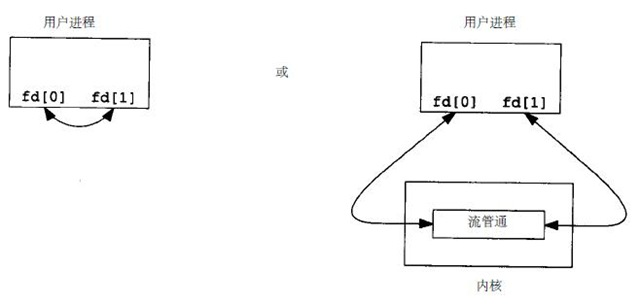
fstat函数对管道的每一端都返回一个FIFO类型的文件描述符，可以用S_ISFIFO宏来测试管道
单个进程中的管道几乎没有任何用处。通常 调用pipe的进程 接着 调用fork ，这样就创建了从 父进程到子进程 或 反之的IPC通道 。下图显示了这种情况：
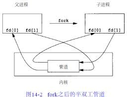
fork之后做什么取决于我们想要有的数据流的方向
对于从 父进程 到 子进程 的管道：
- 父进程 关闭 管道的读端 (fd[0])
- 子进程 则 关闭 写端 (fd[1])。下图显示了描述符的最后安排：
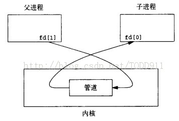
当管道的一端被关闭后，下列规则起作用：
- 当 读 一个 写端已被关闭 的管道时：在所有数据都被读取后， read 返回 0 ，以指示 达到了文件结束处
从技术方面考虑，管道的写端还有进程时，就不会产生文件的结束 可以复制一个管道的描述符，使得有多个进程具有写打开文件描述符 但是，通常一个管道只有一个读进程，一个写进程
- 如果 写 一个 读端已被关闭 的管道：则产生信号 SIGPIPE
- 如果 忽略 该信号或者 捕捉 该信号并从其处理程序返回，则 write出错返回 ，errno设置为 EPIPE
注意：在写管道时，常数PIPE_BUF规定了内核中管道缓存器的大小 如果对管道进行write调用，而且要求写的字节数小于等于PIPE_BUF，则此操作不会与其他进程对同一管道(或FIFO)的write操作穿插进行 但是若有多个进程同时写一个管道(FIFO)，而且某个或某些进程要求写的字节数超过PIPE_BUF字节数，则数据可能会与其他写操作的数据相穿插
实例：创建管道
创建了一个从 父进程 到 子进程 的 管道 ，并且父进程经由该管道向子进程传送数据：
#include "apue.h" int main(void) { int n; int fd[2]; pid_t pid; char line[MAXLINE]; if (pipe(fd) < 0) err_sys("pipe error"); if ((pid = fork()) < 0) { err_sys("fork error"); } else if (pid > 0) { /* parent */ close(fd[0]);// close read tunnel of pipe in parent process if(write(fd[1], "hello world\n", 12) < 0) err_sys("write to pipe error"); } else { /* child */ close(fd[1]); // close write tunnel of pipe in child process n = read(fd[0], line, MAXLINE); if(write(STDOUT_FILENO, line, n) < 0) err_sys("write to console error"); } exit(0); }
上面程序对管道描述符调用read和write 更为普遍的是将管道描述符复制为 “标准输入”和“标准输出” 在此之后通常子进程调用'exec'，执行另一个程序 该程序从标准输入(已创建的管道)或将数据写至其标准输出(管道)
测试结果：
$ ./src/ipc/pipe1 hello world
实例：分页展示文件
下面程序的功能是每次一页显示已产生的输出 已经有很多UNIX公用程序具有分页功能，因此无需再构造一个新的分页程序，而是调用用户最喜爱的分页程序
为了 避免 先将 所有数据写到一个临时文件 中，然后再调用系统中的有关程序显示该文件，将 输出 通过 管道 直接送到 分页程序 ：
- 创建一个 管道
- 创建一个 子进程
- 使 子进程的标准输入 成为 管道的读端
exec 用户喜爱的 分页程序
#include "apue.h" #include <sys/wait.h> #define DEF_PAGER "/usr/bin/less" /* default pager program */ int main(int argc, char *argv[]) { int n; int fd[2]; pid_t pid; char *pager, *argv0; char line[MAXLINE]; FILE *fp; if (argc != 2) err_quit("usage: a.out <pathname>"); if ((fp = fopen(argv[1], "r")) == NULL) err_sys("can't open %s", argv[1]); if (pipe(fd) < 0) err_sys("pipe error"); if ((pid = fork()) < 0) { err_sys("fork error"); } else if (pid > 0) { /* parent */ close(fd[0]); /* close read end */ /* parent copies argv[1] to pipe */ while (fgets(line, MAXLINE, fp) != NULL) { n = strlen(line); if (write(fd[1], line, n) != n) err_sys("write error to pipe"); } if (ferror(fp)) err_sys("fgets error"); close(fd[1]); /* close write end of pipe for reader */ if (waitpid(pid, NULL, 0) < 0) err_sys("waitpid error"); exit(0); } else { /* child */ close(fd[1]); /* close write end */ if (fd[0] != STDIN_FILENO) { // standard input descriptor point to fd[0] if (dup2(fd[0], STDIN_FILENO) != STDIN_FILENO) err_sys("dup2 error to stdin"); close(fd[0]); /* don't need this after dup2 */ } /* get arguments for execl() */ if ((pager = getenv("PAGER")) == NULL) pager = DEF_PAGER; if ((argv0 = strrchr(pager, '/')) != NULL) argv0++; /* step past rightmost slash */ else argv0 = pager; /* no slash in pager */ if (execl(pager, argv0, (char *)0) < 0) err_sys("execl error for %s", pager); } exit(0); }
在调用fork之前先创建一个管道 fork之后父进程关闭其读端 子进程关闭其写端 子进程然后调用dup2，使其标准输入指向管道的读端 当执行分页程序时，其标准输入将是管道的读端
$ ./src/ipc/most2 Makefile # Makefile.in generated by automake 1.15 from Makefile.am. # Makefile. Generated from Makefile.in by configure. # Copyright (C) 1994-2014 Free Software Foundation, Inc. # This Makefile.in is free software; the Free Software Foundation # gives unlimited permission to copy and/or distribute it, # with or without modifications, as long as this notice is preserved. # This program is distributed in the hope that it will be useful, # but WITHOUT ANY WARRANTY, to the extent permitted by law; without # even the implied warranty of MERCHANTABILITY or FITNESS FOR A # PARTICULAR PURPOSE. am__is_gnu_make = { \ if test -z '$(MAKELEVEL)'; then \ false; \ elif test -n '$(MAKE_HOST)'; then \ true; \ elif test -n '$(MAKE_VERSION)' && test -n '$(CURDIR)'; then \ : #分页开始
将一个描述符复制到另一个时，在子进程中，fd[0]复制到标准输入
注意：该描述符fd[0]的值不允许已经是所希望的值 如果fd[0]已经是标准输入，并且先调用dup2，然后调用close则将关闭此进程中只有该单个描述符所代表的标准输入 在本程序中，如果shell没有打开标准输入，那么程序开始处的fopen应已使用描述符0，也就是最小未使用的描述符，所以fd[0]决不会等于标准输入 尽管如此，只要先调用dup2，然后调用close以复制一个描述符到另一个，作为一种保护性的编程措施，总是先将两个描述符进行比较
先使用 环境变量PAGER 获得 用户分页程序名称
如果操作没有成功，则使用系统默认值。这是环境变量的常见用法
实例：父子进程同步
以前使用信号实现了TELL_WAIT、TELL_PARENT、TELL_CHILD、WAIT_PARENT以及WAIT_CHILD
下面则是一个使用 管道 的实现：
#include "apue.h" static int pfd1[2], pfd2[2]; void TELL_WAIT(void) { if (pipe(pfd1) < 0 || pipe(pfd2) < 0) err_sys("pipe error"); } void TELL_PARENT(pid_t pid) { if (write(pfd2[1], "c", 1) != 1) err_sys("write error"); } void WAIT_PARENT(void) { char c; if (read(pfd1[0], &c, 1) != 1) err_sys("read error"); if (c != 'p') err_quit("WAIT_PARENT: incorrect data"); } void TELL_CHILD(pid_t pid) { if (write(pfd1[1], "p", 1) != 1) err_sys("write error"); } void WAIT_CHILD(void) { char c; if (read(pfd2[0], &c, 1) != 1) err_sys("read error"); if (c != 'c') err_quit("WAIT_CHILD: incorrect data"); }
- TELL_WAIT : 在 fork之前 创建 了 两个管道 pfd1[2] , pfd2[2]
- TELL_CHILD : 父进程向 pfd1[1] 写 一个字符 P
- WAIT_PARENT : 子进程从 pfd1[0] 读 一个字符， 没有读到字符时阻塞 (睡眠等待)
- TELL_PARENT : 子进程向 pfd2[1] 写 一个字符 C
WAIT_CHILD : 父进程从 pfd2[0] 读 一个字符， 没有读到字符时阻塞 (睡眠等待)
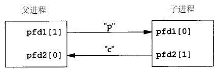
注意：每一个管道都有一个额外的读取进程，这没有关系 也就是说除了"子进程"从pfd1[0]读取，父进程也有上一个管道的读端 因为父进程并没有执行对该管道的读操作，所以这不会产生任何影响
popen和pclose函数
常见的操作是创建一个连接到另一个进程的管道，然后读其输出或向其发送输入 标准I/O库为实现这些操作提供了两个函数popen和pclose
popen 实现的操作是：
- 创建 一个 管道
- fork 一个 子进程
- 关闭 管道的 不使用端
- exec 一个 shell 以 执行命令
- 等待 命令终止
#include <stdio.h> /** * 创建一个子进程，用于执行指定的shell命令 * 可以将此子进程的标准输入或标准输出为管道，该管道的另一端为调用进程中返回的管道文件流指针所引用 * * cmdstring : 要执行的shell命令 * type : 为"r"时，子进程所执行命令的标准输出为管道的输入端，该管道的输出端为popen的返回值 * 为"w"时，子进程执行的命令的标准输入为管道的输出端，该管道的输入端为popen的返回值 * * return : 若成功则为文件指针，若出错则为NULL * */ FILE *popen(const char *cmdstring, const char *type);
函数 popen 先执行 fork ，然后调用 exec 以执行 cmdstring ，并且返回一个 标准I/O文件指针 ：
- 如果type是 r ：则 文件指针 连接到 cmdstring的标准输出
- 如果type是 w : 则 文件指针 连接到 cmdstring的标准输入
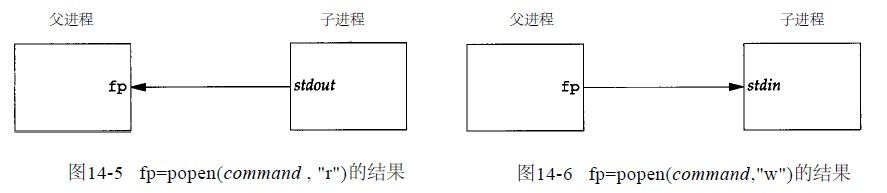
pclose 函数： 关闭 标准I/O流
#include <stdio.h> /** * 关闭popen打开的文件指针 * * fp : popen打开的文件指针 * * return : cmdstring的终止状态，若出错则为 -1 * */ int pclose(FILE *fp);
pclose 函数会 等待命令执行结束 ，然后返回 shell的终止状态
- 如果 shell不能被执行 ，则pclose返回的终止状态与shell执行 exit(127) 一样
cmdstring
cmdstring由 Bourne shell 以下列方式执行：
$ sh -c cmdstring
这表示shell将扩展 cmdstring中的任何特殊字符 。例如可以使用：
fp = popen("ls *.c", "r");
或者
fp = popen("cmd 2>&1", "w");
使用popen实现分页读取文件
shell命令 ${PAGER:-more} 的意思是：如果shell变量 PAGER 已经定义，且其值非空，则使用其值 ，否则使用字符串 more
#include "apue.h" #include <sys/wait.h> #define PAGER "${PAGER:-more}" /* environment variable, or default */ int main(int argc, char *argv[]) { char line[MAXLINE]; FILE *fpin, *fpout; if (argc != 2) err_quit("usage: a.out <pathname>"); if ((fpin = fopen(argv[1], "r")) == NULL) err_sys("can't open %s", argv[1]); if ((fpout = popen(PAGER, "w")) == NULL) err_sys("popen error"); /* copy argv[1] to pager */ while (fgets(line, MAXLINE, fpin) != NULL) { if (fputs(line, fpout) == EOF) err_sys("fputs error to pipe"); } if (ferror(fpin)) err_sys("fgets error"); if (pclose(fpout) == -1) err_sys("pclose error"); exit(0); }
实现popen和pclose函数
实现popen和pclose函数需要考虑很多细节：
- 每次调用 popen 时，应当 记住 所 创建的子进程的进程ID ，以及其 文件描述符 或 FILE指针
- 在 数组childpid 中 保存 子进程ID ，并用 文件描述符 作为其 下标
- 当以 FILE指针 作为参数调用 pclose 时，
- 调用标准I/O函数 fileno 以得到 文件描述符
- 取得 子进程ID
- 调用 waitpid
- 因为一个进程可能 调用 popen 多次 ，所以在 动态分配 childpid数组 时(第一次调用popen时)，其 长度 必须容纳与 文件描述符数相同的进程数
根据POSIX要求子进程必须从头逐个检查childpid数组的各元素，关闭仍旧打开的任一描述符 因为“fork的子进程”可能继承了“父进程以前popen所形成的管道”
#include "apue.h" #include <errno.h> #include <fcntl.h> #include <sys/wait.h> /* * Pointer to array allocated at run-time. */ static pid_t *childpid = NULL; /* * From our open_max(), {Prog openmax}. */ static int maxfd; FILE *popen(const char *cmdstring, const char *type) { int i; int pfd[2]; pid_t pid; FILE *fp; /* only allow "r" or "w" */ if ((type[0] != 'r' && type[0] != 'w') || type[1] != 0) { errno = EINVAL; /* required by POSIX */ return(NULL); } if (childpid == NULL) { /* first time through */ /* allocate zeroed out array for child pids */ maxfd = open_max(); if ((childpid = calloc(maxfd, sizeof(pid_t))) == NULL) return(NULL); } if (pipe(pfd) < 0) return(NULL); /* errno set by pipe() */ if ((pid = fork()) < 0) { return(NULL); /* errno set by fork() */ } else if (pid == 0) { /* child */ if (*type == 'r') { close(pfd[0]); if (pfd[1] != STDOUT_FILENO) { dup2(pfd[1], STDOUT_FILENO); close(pfd[1]); } } else { close(pfd[1]); if (pfd[0] != STDIN_FILENO) { dup2(pfd[0], STDIN_FILENO); close(pfd[0]); } } /* close all descriptors in childpid[] */ for (i = 0; i < maxfd; i++) if (childpid[i] > 0) close(i); execl("/bin/sh", "sh", "-c", cmdstring, (char *)0); _exit(127); } /* parent continues... */ if (*type == 'r') { close(pfd[1]); if ((fp = fdopen(pfd[0], type)) == NULL) return(NULL); } else { close(pfd[0]); if ((fp = fdopen(pfd[1], type)) == NULL) return(NULL); } childpid[fileno(fp)] = pid; /* remember child pid for this fd */ return(fp); } int pclose(FILE *fp) { int fd, stat; pid_t pid; if (childpid == NULL) { errno = EINVAL; return(-1); /* popen() has never been called */ } fd = fileno(fp); if ((pid = childpid[fd]) == 0) { errno = EINVAL; return(-1); /* fp wasn't opened by popen() */ } childpid[fd] = NULL; if (fclose(fp) == EOF) return(-1); while (waitpid(pid, &stat, 0) < 0) if (errno != EINTR) return(-1); /* error other than EINTR from waitpid() */ return(stat); /* return child's termination status */ }
若pclose的调用者已经为信号SIGCHLD设置了一个信号处理程序，则waitpid将返回一个EINTR 因为允许调用者捕捉此信号(或者任何其他可能中断waitpid调用的信号)，所以当waitpid被一个捕捉到的信号中断时，那就必须再次调用waitpid
用popen变换输入
考虑一个应用程序，它向标准输出写一个提示，然后从标准输入读1行 使用popen可以在应用程序和输入之间插入一个程序以对输入进行变换处理
下图显示了进程的安排：
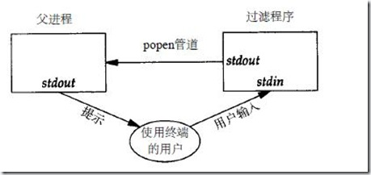
下面是一个简单的过滤程序，它只是将 输入 复制 到 输出 ，在复制时将任一 大写字符变换为小写字符 。在 写了一行 之后，对 标准输出 进行了 刷新 (用 fflush )：
#include "apue.h" #include <ctype.h> int main(void) { int c; while ((c = getchar()) != EOF) { if (isupper(c)) c = tolower(c); if (putchar(c) == EOF) err_sys("output error"); if (c == '\n') fflush(stdout); } exit(0); }
对该过滤程序进行编译，其可执行目标代码存放在文件 myuclc 中。在下面程序中通过 popen 调用 myuclc 完成对 输入的过滤 ：
#include "apue.h" #include <sys/wait.h> int main(void) { char line[MAXLINE]; FILE *fpin; if ((fpin = popen("myuclc", "r")) == NULL) err_sys("popen error"); for ( ; ; ) { fputs("prompt> ", stdout); fflush(stdout); if (fgets(line, MAXLINE, fpin) == NULL) /* read from pipe */ break; if (fputs(line, stdout) == EOF) err_sys("fputs error to pipe"); } if (pclose(fpin) == -1) err_sys("pclose error"); putchar('\n'); exit(0); }
测试结果：
$ ./src/ipc/popen1 prompt> HELLO WORLD hello world prompt> ^C
因为标准输出通常是按行进行缓存的 而提示并不包含新行符，所以在写了提示之后，需要调用fflush
协同进程
UNIX过滤程序从 标准输入 读取数据 ，对其进行 适当处理 后 写到 标准输出 。 几个过滤进程 通常在 shell管道命令 中 线性地连接 。当 同一个程序 产生 某个过滤程序的输入 ，同时又 读取 该过滤程序的输出 时，则该 过滤程序 就成为 协同进程
协同进程通常在“shell的后台运行”，其标准输入和标准输出通过管道连接到另一个程序 虽然要求初始化一个协同进程，并将其输入和输出连接到另一个进程的shell语法是十分奇特的，但是协同进程的工作方式在C程序中也是非常有用的
进程先 创建 两个管道 ， 协同进程的标准输入 和 协同进程的标准输出 。下图显示了这种安排：
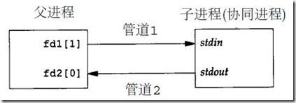
- popen 提供连接到 另一个进程 的 标准输入 或 标准输出 的一个单行管道
- 协同进程 产生连接到另一个进程的两个单行管道
对两个数求和的简单过滤
下面程序从标准输入读两个数，计算它们的和，然后将结果写至标准输出:
#include "apue.h" int main(void) { int n, int1, int2; char line[MAXLINE]; while ((n = read(STDIN_FILENO, line, MAXLINE)) > 0) { line[n] = 0; /* null terminate */ if (sscanf(line, "%d%d", &int1, &int2) == 2) { sprintf(line, "%d\n", int1 + int2); n = strlen(line); if (write(STDOUT_FILENO, line, n) != n) err_sys("write error"); } else { if (write(STDOUT_FILENO, "invalid args\n", 13) != 13) err_sys("write error"); } } exit(0); }
- 从 标准输入 读入 两个数之后调用 add2 协同进程
- 从 协同进程送来的值 则 写到 其 标准输出
- 在协同程序中 创建 了 两个管道
- 一个用做协同进程的标准输入
- 另一个则用做它的标准输出
- 父、子进程各自关闭它们不需使用的端口
在调用execl之前， 子进程 调用 dup2 使 管道描述符 移至其 标准输入 和 标准输出 ：
#include "apue.h" static void sig_pipe(int); /* our signal handler */ int main(void) { int n, fd1[2], fd2[2]; pid_t pid; char line[MAXLINE]; if (signal(SIGPIPE, sig_pipe) == SIG_ERR) err_sys("signal error"); if (pipe(fd1) < 0 || pipe(fd2) < 0) err_sys("pipe error"); if ((pid = fork()) < 0) { err_sys("fork error"); } else if (pid > 0) { /* parent */ close(fd1[0]); close(fd2[1]); while (fgets(line, MAXLINE, stdin) != NULL) { n = strlen(line); if (write(fd1[1], line, n) != n) err_sys("write error to pipe"); if ((n = read(fd2[0], line, MAXLINE)) < 0) err_sys("read error from pipe"); if (n == 0) { err_msg("child closed pipe"); break; } line[n] = 0; /* null terminate */ if (fputs(line, stdout) == EOF) err_sys("fputs error"); } if (ferror(stdin)) err_sys("fgets error on stdin"); exit(0); } else { /* child */ close(fd1[1]); close(fd2[0]); if (fd1[0] != STDIN_FILENO) { if (dup2(fd1[0], STDIN_FILENO) != STDIN_FILENO) err_sys("dup2 error to stdin"); close(fd1[0]); } if (fd2[1] != STDOUT_FILENO) { if (dup2(fd2[1], STDOUT_FILENO) != STDOUT_FILENO) err_sys("dup2 error to stdout"); close(fd2[1]); } if (execl("./add2", "add2", (char *)0) < 0) err_sys("execl error"); } exit(0); } static void sig_pipe(int signo) { printf("SIGPIPE caught\n"); exit(1); }
测试：
$ ./pipe4 1 invalid args 2 3 5 4 5 SIGPIPE caught
当pipe4进程正等待输入时杀死add2协同进程 然后输入两个数，进行写操作时，由于该管道无读进程，于是调用信号处理函数sig_pipe
使用标准IO改写add2
在协同进程add2中，使用了 UNIX的I/O :read和write。现在使用 标准I/O 改写该协同进程：
#include "apue.h" int main(void) { int int1, int2; char line[MAXLINE]; while (fgets(line, MAXLINE, stdin) != NULL) { if (sscanf(line, "%d%d", &int1, &int2) == 2) { if (printf("%d\n", int1 + int2) == EOF) err_sys("printf error"); } else { if (printf("invalid args\n") == EOF) err_sys("printf error"); } } exit(0); }
测试结果：
$ ./spipe4 1 2 #死锁
若pipe4调用此新的协同进程，则它不再工作，问题出在系统默认的标准I/O缓存机制上： 当add2stdio被调用时，对标准输入的第一个fgets引起标准I/O库分配一个缓存，并选择缓存的类型 因为标准输入是个管道，所以isatty为假，于是标准I/O库由系统默认是全缓存的，对标准输出也有同样的处理 当add2stdio从其标准输入读取而发生堵塞时，pipe4从管道读时也发生堵塞，于是产生了死锁
对将要执行的这样一个协同进程可以设置buf，可以在add2stdio程序的while循环之前加上如下代码:
if (setvbuf(stdin, NULL, _IOLBF, 0) != 0) err_sys("setvbuf error"); if (setvbuf(stdout, NULL, _IOLBF, 0)!= 0) err_sys("setvbuf error");
这使得当 有一行可用时fgets即返回 ，并使得 当输出一新行符 时，printf即执行 fflush操作
这种设置往往要求对协同进程进程代码修改，但在使用一个第三方的协同进程时不一定可以满足 更一般解决方法是使被调用的协同进程认为它的标准输入和输出被连接到一个“伪终端” 这使得协同进程中的标准I/O例程对这两个I/O流进行行缓存
FIFO
管道只能由相关进程使用，它们共同的祖先进程创建了管道
FIFO 被称为 命名管道 ，通过FIFO不相关的进程也能交换数据
mkfifo函数
曾经提及FIFO是一种文件类型 而stat结构的成员st_mode的编码指明文件是否是FIFO类型，并且可以用S_ISFIFO宏对此进行测试
mkfifo 函数： 创建命名管道
#include <sys/stat.h> /** * 创建命名管道 * * pathname: 管道文件名 * mode: 可选择参数，当oflag包含O_CREAT的时候，表示创建文件的权限 * * return: 若成功则为 0，若出错则为 -1 * */ int mkfifo(const char *pathname, mode_t mode);
- mode 参数：规格说明与open函数中的mode相同
- FIFO文件的用户和组的所有权与前面文件和目录中所描述的相同
mkinfo 类似于创建文件，事实上FIFO的路径名存在于文件系统中
FIFO文件
一旦已经用mkfifo创建了一个FIFO，就可用open打开它 实际上，一般的文件I/O函数close、read、write、unlink等都可用于FIFO
- 在一般情况：
- 只读打开 要 阻塞 到某个 其他进程为写打开 此FIFO
- 为写而打开 一个FIFO要 阻塞 到某个 其他进程为读 而打开它
- 指定了 非阻塞 标志 O_NONBLOCK
- 只读打开 立即返回
- 没有进程已经为读 而打开一个FIFO，那么 只写打开 将 出错返回 ，其errno是 ENXIO
- 如果 写 一个尚 无进程为读 而打开的FIFO，则产生信号 SIGPIPE
- 若某个FIFO的 最后一个写进程 关闭 了该FIFO，则将为该FIFO的 读进程 产生一个 文件结束标志
一个给定的FIFO有多个写进程是常见的，这就意味着如果不希望多个进程所写的数据互相穿插，则需考虑原子写操作 正如对于管道一样，常数PIPE_BUF说明了可被原子写到FIFO的最大数据量
FIFO用途
1. shell命令使用命名管道将数据从一条管道线传送到另一条，为此无需创建中间临时文件 2. 用于客户机-服务器应用程序中，以在客户机和服务器之间传递数据
复制输出流
FIFO可被用于复制串行管道命令之间的输出流，于是也就不需要写数据到中间磁盘文件中，类似于使用管道以避免中间磁盘文件 但是管道只能用于进程间的线性连接，而FIFO因为具有名字，所以它可用于非线性连接
考虑这样一个操作过程，它需要对一个 经过过滤的输入流 同时进行 两次处理 。图14-9表示了这种安排：
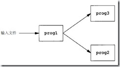
使用FIFO以及UNIX程序tee(1)：将其 标准输入 同时复制到其 标准输出 以及其命令行中包含的 命名文件 中：
$ mkfifo fifo1 # 创建管道文件fifo1 $ prog3 < fifo1 & # 后台启动prog3等待fifo1的输出 $ prog1 < infile | tee fifo1 | prog2 # 启动progl, 用tee将其输出发送到fifo1和prog2
- 创建命名管道 fifo1
- 后台起动prog3，它 从fifo1读数据
- 起动prog1
- 用 tee 将其 输出 发送 到 fifo1 和 prog2
图14-10显示了有关安排：
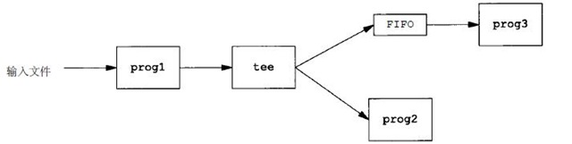
这样就可以无需使用临时文件
简单客户-服务器通信
FIFO的另一个应用是在客户机和服务器之间传送数据
如果有一个服务器，它与很多客户机有关，每个 客户机 都可将其请求写到一个该服务器创建的 众所周知的FIFO 中。
所有需与服务器联系的客户机都知道该FIFO的路径名 因为对于该FIFO有多个写进程，客户机发送给服务器的请求其长度要小于PIPE_BUF字节，这样就能避免客户机各次写之间的穿插
图14-11显示了这种安排：
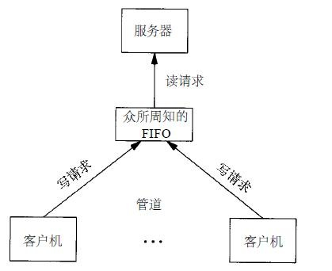
这种类型的客户机-服务器通信中使用FIFO的问题是：服务器如何将回答送回各个客户机 不能使用单个FIFO，因为服务器会发出对各个客户机请求的响应 而请求者却不可能知道什么时候去读才能恰恰得到对它的响应
一种解决方法是 每个客户机 都在其 请求中 发送 其 进程ID 。然后 服务器 为 每个客户机 创建一个FIFO，所使用的路径名是以客户机的进程ID为基础的
例如，服务器可以用名字/tmp/serv1.XXXXX创建FIFO，其中XXXXX被替换成客户机的进程ID。图14-12显示了这种安排：
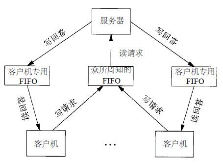
这种安排可以工作，但也有一些不足之处： 服务器不能判断一个客户机是否崩溃终止，这就使得客户机专用的FIFO会遗留在文件系统中 服务器必须捕捉SIGPIPE信号，因为客户机在发送一个请求后没有读取响应就可能终止，于是留下一个有写进程(服务器)而无读进程的客户机专用FIFO
按照图14-12中的安排，如果服务器以 只读方式 打开 众所周知的FIFO (因为它只需读该FIFO)，则 每次客户机数 从 1 变成 0 ， 服务器就将在FIFO中读到一个 文件结束 标记
为使服务器免于处理这种情况，一种常见的技巧是使服务器以读-写方式打开该FIFO
系统V IPC
- 消息队列
- 信号量
- 共享内存
相似特征
标识符和关键字
每个 内核 中的 IPC结构 (消息队列、信号量或共享存储段)都用一个 非负整数 的 标识符 加以引用
例如，为了对一个消息队列发送或取消息，只需知道其队列标识符 与文件描述符不同，IPC标识符不是small integer 当一个IPC结构被创建，以后又被删除时，与这种结构相关的标识符连续加1，直至达到一个整型数的最大正值，然后又回转到0 即使在IPC结构被删除后也记住该值，每次使用此结构时则增1，该值被称为“槽使用顺序号”
无论何时创建IPC结构，都应指定一个 关键字 ，关键字的数据类型由系统规定为 key_t ，通常在头文件 <sys/types.h> 中被规定为 长整型
关键字由 内核 变换成 标识符
客户机和服务器使用同一IPC结构
有多种方法使客户机和服务器在同一IPC结构上会合：
- 服务器 可以指定关键字 IPC_PRIVATE 创建一个新IPC结构，将返回的 标识符 存放 在某处(例如一个文件)以便 客户机取用
- 关键字 IPC_PRIVATE 保证 服务器创建一个新IPC结构
缺点： 服务器要将整型标识符写到文件中，然后客户机在此后又要读文件取得此标识符
IPC_PRIVATE关键字也可用于父、子关系进程 父进程指定IPC_PRIVATE创建一个新IPC结构，所返回的标识符在fork后可由子进程使用 子进程可将此标识符作为exec函数的一个参数传给一个新程序
- 在一个 公用头文件 中定义一个客户机和服务器都认可的关键字。然后 服务器 指定此关键字 创建一个新的IPC结构
问题是该关键字可能已与一个IPC结构相结合，在此情况下，get函数(msgget、semget或shmget)出错返回 服务器必须处理这一错误，删除已存在的IPC结构，然后试着再创建它
- 客户机和服务器认同一个 路径名 和 课题ID (课题ID是0~255之间的字符值)，然后调用函数 ftok 将这两个值变换为一个 关键字 ，下面就和第二种做法类似
ftok提供的唯一服务就是由一个路径名和课题ID产生一个关键字 因为一般来说，客户机和服务器至少共享一个头文件，所以一个比较简单的方法是避免使用ftok 而只是在该头文件中存放一个大家都知道的关键字
创建IPC结构
三个get函数( msgget 、 semget 和 shmget )都有两个类似的参数 key 和一个整型的 flag 。如若满足下列条件，则 创建一个新的 IPC结构(通常由服务器创建)：
- key 是 IPC_PRIVATE
- key 当前 未与特定类型的IPC结构 相结合， flag 中指定了 IPC_CREAT 位。
注意，为了访问一个现存队列，决不能指定IPC_PRIVATE作为关键字 因为这是一个特殊的键值，它总是用于创建一个新队列 为了访问一个用IPC_PRIVATE关键字创建的现存队列，一定要知道与该队列相结合的标识符，并且不应指定IPC_CREAT 因为在其他IPC调用中(例如msgsnd、msgrcv)必须使用该标识符
如果希望创建一个新的IPC结构，保证不是引用具有同一标识符的一个现行IPC结构，那么必须在 flag 中同时指定 IPC_CREAT 和 IPC_EXCL 位。这样做了以后，如果 IPC结构已经存在 就会 造成出错 ，返回 EEXIST
这与指定了O_CREAT和O_EXCL标志的open相类似
权限结构
系统V IPC为每一个IPC结构设置了一个 ipc_perm 结构。该结构规定了 许可权 和 所有者 ：
#include <sys/ipc.h> /* Data structure used to pass permission information to IPC operations. */ struct ipc_perm { __key_t __key; /* Key. */ __uid_t uid; /* Owner's user ID. */ __gid_t gid; /* Owner's group ID. */ __uid_t cuid; /* Creator's user ID. */ __gid_t cgid; /* Creator's group ID. */ unsigned short int mode; /* Read/write permission. */ unsigned short int __pad1; unsigned short int __seq; /* Sequence number. */ unsigned short int __pad2; unsigned long int __unused1; unsigned long int __unused2; };
在创建IPC结构时，除 seq以外 的所有字段都 赋初值 ：
- 可以调用 msgctl 、 semctl 或 shmctl 修改uid、gid和mode字段
- 为了改变这些值， 调用进程 必须是 IPC结构的创建者 或 超级用户
更改这些字段类似于对文件调用chown和chmod
mode字段
mode 字段的值类似于 文件权限 的，但是对于 任何IPC结构都不存在 执行 许可权 。下表中对每种IPC说明了6种许可权：
| 权限 | 消息队列 | 信号量 | 共享内存 |
| 用户读 | MSG_R | SEM_R | SHM_R |
| 用户写(更改) | MSG_W | SEM_A | SHM_W |
| 组读 | MSG_R >> 3 | SEM_R >> 3 | SHM_R >> 3 |
| 组写(更改) | MSG_W >> 3 | SEM_A >> 3 | SHM_W >> 3 |
| 其他读 | MSG_R >> 6 | SEM_R >> 6 | SHM_R >> 6 |
| 其他写(更改) | MSG_W >> 6 | SEM_A >> 6 | SHM_R >> 6 |
资源限制
三种形式的系统VIPC都有可能会遇到的资源限制
优点和缺点
系统V IPC的缺点
- IPC结构是在系统范围内起作用的， 没有访问计数
- 如果创建了一个消息队列，在该队列中放入了几条消息，然后终止，但是 该消息队列及其内容并不被删除 。它们余留在系统中直至：
- 由某个进程调用 msgrcv 或 msgctl 读消息或删除消息队列
- 某个进程执行 ipcrm (1)命令删除消息队列
- 由正在再 起动 的系统删除消息队列
- 如果创建了一个消息队列，在该队列中放入了几条消息，然后终止，但是 该消息队列及其内容并不被删除 。它们余留在系统中直至：
与管道pipe相比，那么当最后一个访问管道的进程终止时，管道就被完全地删除了 对于FIFO而言虽然当最后一个引用FIFO的进程终止时其名字仍保留在系统中，直至显式地删除它，但是留在FIFO中的数据却在此时全部删除
- 这些IPC结构并 不按名字 为 文件系统 所知
- 不能用以前的函数来存取它们或修改它们的特性，为了支持它们不得不 增加了十多个全新的系统调用 (msgget、semop、shmat等)
- 不能用ls命令见到它们
- 不能用rm命令删除它们
- 不能用chmod命令更改它们的存取权
- 不得不增加了全新的命令ipcs和ipcrm
- 这些IPC 不使用文件描述符 ，所以 不能对它们使用多路转接I/O 函数：select和poll
- 这就使得一次使用多个IPC结构，以及用文件或设备I/O来使用IPC结构很难做到
- 不能用以前的函数来存取它们或修改它们的特性，为了支持它们不得不 增加了十多个全新的系统调用 (msgget、semop、shmat等)
没有某种形式的忙-等待循环，就不能使一个服务器等待一个消息放在两个消息队列的任一一个中
IPC的优点
- 避免 多次 open , write , close 调用
- 可靠的
- 流是 受到控制 的
- 面向 记录
- 支持 非先进先出
总结
下表对不同形式的IPC的某些特征进行了比较：
| 类型 | 无连接 | 可靠 | 流控制 | 记录 | 消息类型或优先权 |
| 消息队列 | 否 | 是 | 是 | 是 | 是 |
| 流 | 否 | 是 | 是 | 是 | 是 |
| UNIX流套接字 | 否 | 是 | 是 | 否 | 否 |
| UNIX数据套接字 | 是 | 是 | 否 | 是 | 否 |
| FIFO | 否 | 是 | 是 | 否 | 否 |
无连接 指的是无需先调用某种形式的open，就能发送消息的能力
正如前述因为需要有某种技术以获得队列标识符，所以并不认为消息队列具有无连接特性
因为所有这些形式的IPC都限制用在单主机上，所以它们都是 可靠的
当消息通过网络传送时，丢失消息的可能性就要加以考虑
流控制 的意思是：
- 如果 系统资源 短缺 (缓存)或者如果 接收进程 不能再接收 更多消息，则 发送进程 就要 睡眠
- 当 流控制条件 消失 时， 发送进程 应自动地被 唤醒
表中没有表示的一个特征是： IPC设施能否自动地为每个客户机自动地创建一个到服务器的唯一连接 实际上流以及UNIX流套接口可以提供这种能力
消息队列
消息队列 是 消息的链表 ，存放在 内核 中并由 消息队列标识符 标识。因此可以将称消息队列为 队列 ，其标识符为 队列ID
- msgget 函数： 创建 一个 新 队列或 打开 一个 现存的 队列
- msgsnd 函数：将 新消息 添加 到 队列尾端 ，每个消息包含：
- 一个 正长整型 类型 字段
- 一个 非负 长度
- 实际 数据 字节
- msgrcv 函数：从队列中 取消息
- 并不一定要以 先进先出 次序取消息，也可以按 消息的类型 字段取消息
msqid_ds结构
每个队列都有一个 msqid_ds结构 与其相关。此结构规定了 队列的当前状态 ：
/* Structure of record for one message inside the kernel. The type `struct msg' is opaque. */ struct msqid_ds { struct ipc_perm msg_perm; /* structure describing operation permission */ struct msg *msg_first; /* ptr to first message on queue */ struct msg *msg_last; /* ptr to last message on queue */ time_t msg_stime; /* time of last msgsnd command */ time_t msg_rtime; /* time of last msgrcv command */ time_t msg_ctime; /* time of last change */ unsigned long int msg_cbytes; /* current number of bytes on queue */ msgqnum_t msg_qnum; /* number of messages currently on queue */ msglen_t msg_qbytes; /* max number of bytes allowed on queue */ pid_t msg_lspid; /* pid of last msgsnd() */ pid_t msg_lrpid; /* pid of last msgrcv() */ };
两个指针 msg_first 和 msg_last 分别指向 相应消息在内核中的存放位置
这两个指针对用户进程而言是无价值的
资源限制
| 名字 | 说明 | 典型值 |
| MSGMAX | 可发送的最长消息的字节长度 | 2048 |
| MSGMNB | 特定队列的最大字节长度(亦即队列中所有消息之和) | 4096 |
| MSGMNI | 系统中最大消息队列数 | 50 |
| MSGTOL | 系统中最大消息数 | 50 |
msgget函数
msgget 函数：打开一个现存队列或创建一个新队列
#include <sys/types.h> #include <sys/ipc.h> #include <sys/msg.h> /** * 新建或打开一个消息队列 * * key: 消息队列关键字，内核根据规则转换为标识符 * flag: 消息队列权限 * * return: 若成功则为 消息队列ID，若出错则为 -1 * */ int msgget(key_t key, int flag);
当 创建 一个新队列时，初始化 msqid-ds结构 的下列成员:
- ipc-perm 结构按上节中所述进行初始化。该结构中 mode 按 flag 中的 相应许可权位 设置
- msg_qnum，msg_lspid、msg_lrpid、msg_stime和msg_rtime都设置为 0
- msg_ctime设置为 当前时间
- msg_qbytes 设置为 系统限制值
msgctl函数
msgctl 函数：对队列 执行多种操作 ，类似于ioctl函数
#include <sys/types.h> #include <sys/ipc.h> #include <sys/msg.h> /** * 管理一个消息队列 * * msgid: 消息队列ID * cmd: 管理命令 * buf: 消息队列指针 * * return: 若成功则为 0，出错则为 -1 * */ int msgctl(int msqid, int cmd, struct mdqid_ds *buf);
cmd参数
cmd 参数指定对于由 msqid 规定的队列要执行的命令：
- IPC_STAT ： 取 此队列的 msqid_ds结构 ，并将其 存放 在 buf指向的结构 中
- IPC_SET ：由 buf指向的结构 中的值， 设置 与此队列相关的结构中的下列四个字段:
- msg_perm.uid
- msg_perm.gid
- msg_perm.mode
- msg_qbytes
此命令只能由下列两种进程执行: 其有效用户ID等于msg_perm.cuid或msg_perm.uid 或 具有超级用户特权的进程 只有超级用户才能增加msg_qbytes的值
- IPC_RMID ：从系统中 删除 该 消息队列 以及仍在 该队列上的所有数据
这种删除立即生效。仍在使用这一消息队列的其他进程在它们下一次试图对此队列进行操作时，将出错返回EIDRM 此命令只能由下列两种进程执行： 其有效用户ID等于msg_perm.cuid或msg_perm.uid 或 具有超级用户特权的进程
msgsnd函数
msgsnd 函数：将 数据 放到 消息队列 上
#include <sys/types.h> #include <sys/ipc.h> #include <sys/msg.h> /** * 往队列末尾添加一个消息 * * msqid: 消息队列标识符 * ptr: 消息指针 * nbytes: 实际数据字节 * flag: 读取方式标志 * * return: 成功则为 0，若出错则为 -1 * */ int msgsnd(int msqid, const void *ptr, size_t nbytes, int flag);
ptr指针
ptr指向的消息结构 中包含了 正整型 消息类型 ，在其后立即跟随了 消息数据
若nbytes是0，则无消息数据
假设发送的最长消息是512字节，则可定义下列结构:
struct mymesg { long mtype; /* positive message type */ char mtext[512]; /* message data of length nbytes */ };
ptr就是一个 指向mymesg结构的指针
接收者可以使用消息类型以“非先进先出”的次序取消息
flag标记
flag的值可以指定为 IPC_NOWAIT ，这类似于文件 I/O的非阻塞I/O标志
若消息队列已满(或者是队列中的消息总数等于系统限制值，或队列中的字节总数等于系统限制值)
- 如果指定 IPC_NOWAIT ： msgsnd 立即出错返回 EAGAIN
- 如果没有指定 IPC_NOWAIT ，则进程 阻塞 直到：
- 有空间 可以容纳要发送的消息
- 从系统中 删除 了此队列，返回 EIDRM (“标志符被删除”)报错
- 捕捉 到一个 信号 ，并从信号处理程序返回，返回 EINTR 报错
注意：对消息队列删除的处理不是很完善 因为对每个消息队列并没有设置一个引用计数器(对打开文件则有这种计数器) 所以删除一个队列使得仍在使用这一队列的进程在下次对队列进行操作时出错返回 信号量机构也以同样方式处理其删除 而删除一个文件则要等到使用该文件的最后一个进程关闭了它，才能删除文件的内容
msgrcv函数
msgrcv 函数：从队列中取消息
#include <sys/types.h> #include <sys/ipc.h> #include <sys/msg.h> /** * 从队列中取走一个消息，这意味着消息会被移出链表 * * msqid: 消息标识符 * ptr: 消息指针 * nbytes: 消息实际字节长度 * type: 消息类型 * flag: 取走标志 * * return: 若成功则为 消息数据部分的长度，若出错则为 -1 */ int msgrcv(int msqid, void *ptr, size_t nbytes, long type, int flag);
如同msgsnd中一样：
- ptr 参数指向一个长整型数(返回的消息类型存放在其中)，跟随其后的是存放实际消息数据的缓存
- nbytes 说明数据 缓存的长度 。若返回的 消息大于nbytes :
- 在flag中设置了 MSG_NOERROR ，则该消息被 截短 (在这种情况下，不通知消息截短了)
- 如果没有设置这一标志，而消息又太长，则 出错 返回 E2BIG (消息仍留在队列中)
- flag值指定IPC_NOWAIT，使操作不阻塞。这使得如果没有所指定类型的消息，则msgrcv出错返回ENOMSG
- 如果flag没有指定IPC_NOWAIT，则进程阻塞直至：
- 有了指定类型的消息
- 从系统中删除了此队列(出错返回EIDRM)
- 捕捉到一个信号并从信号处理程序返回(出错返回EINTR)。
type参数
参数 type 可以指定想要 哪一种 消息：
- type == 0 ： 返回队列中的 第一个消息
- type > 0 ：返回队列中 消息类型为type的第一个消息
- type < 0 ：返回队列中 消息类型值小于或等于type绝对值 ，而且在这种消息中，其 类型值又是最小的消息
非零的type用于以非先进先出次序读消息 例如，若应用程序对消息赋优先权，那么type就可以是优先权值 如果一个消息队列由多个客户机和一个服务器使用，那么type字段可以用来包含客户机进程ID。
实例
向一个消息队列写入消息，读取出对应类型的消息
#include <unistd.h> #include <sys/msg.h> #include <stdio.h> #include "apue.h" //消息结构 struct message{ long int mtype; char mtext[512]; }; int main(void) { //创建消息队列 int msgid = msgget(IPC_PRIVATE,0666); //创建消息结构 struct message snd; //消息类型 snd.mtype = 911; //消息内容 strcpy(snd.mtext,"help"); //发送消息到队列 if(msgsnd(msgid,&snd,5,0) == -1){ printf("msgsnd %m\n"); return -1; } //读取消息队列信息 struct msqid_ds ds; if(msgctl(msgid, IPC_STAT, &ds) == -1){ printf("msgctl IPC_STAT %m\n"); return -1; } printf("current bytes:%d ,current number:%d ,max bytes:%d \n", ds.msg_cbytes, ds.msg_qnum, ds.msg_qbytes); struct message rcv; //非阻塞读取消息类型为910的消息，出错返回 if(msgrcv(msgid, &rcv, 512, 910, IPC_NOWAIT) == -1){ printf("msgrcv1 %m\n"); } //阻塞读取消息类型为911的消息 if(msgrcv(msgid, &rcv, 521, 911, 0) == -1){ printf("msgrcv2 %m\n"); return -1; } //打印读取的消息 printf("%s\n",rcv.mtext); //清除消息队列 if(msgctl(msgid,IPC_RMID,NULL)==-1){ printf("msgctl IPC_RMID %m\n"); } return 0; }
测试结果：
$ ./src/ipc/msg1 current bytes:5 ,current number:1 ,max bytes:16384 #当前消息队列信息：写入5个字节，拥有1个消息，最大可写入字节数是16384 msgrcv1 No message of desired type # 无法读取类型为910的消息 help #读取出的消息
如若需要客户机和服务器之间的“双向数据流”，可以使用“消息队列“或”流管道“(用Socket套接字来实现) 消息队列原来的目的是“提供比一般IPC更高速度的进程通信方法”，而现在这个优点已经不复存在，所以不推荐使用消息队列！
信号量
信号量与已经介绍过的IPC(管道、FIFO以及消息列队)不同。它是一个计数器，用于多进程对共享数据对象的存取。为了获得共享资源，进程需要执行下列操作：
- 测试控制该资源的信号量
- 若此信号量的值为正，则进程可以使用该资源。进程将信号量值减1，表示它使用了一个资源单位
- 若此信号量的值为0，则进程进入睡眠状态，直至信号量值大于0。若进程被唤醒后， 它返回至第1步
当进程不再使用由一个信息量控制的共享资源时，该信号量值增1。如果有进程正在睡眠等待此信号量，则唤醒它们
实现
为了正确地实现信息量，信号量值的测试及减1操作应当是原子操作。为此，信号量通常是在内核中实现的
常用的信号量形式被称之为双态信号量(binary semaphore)。它控制单个资源，其初始值为1。但是，一般而言，信号量的初值可以是任一正值，该值说明有多少个共享资源单位可供共享应用。
不幸的是，系统V的信号量与此相比要复杂得多。三种特性造成了这种并非必要的复杂性:
- 信号量并非是一个非负值，而必需将信号量定义为含有一个或多个信号量值的集合。当创建一个信号量时，要指定该集合中的各个值
- 创建信息量(semget)与对其赋初值(semctl)分开。这是一个致命的弱点，因为不能原子地创建一个信号量集合，并且对该集合中的所有值赋初值
- 即使没有进程正在使用各种形式的IPC，它们仍然是存在的，所以不得不为这种程序担心，它在终止时并没有释放已经分配给它的信号量。下面将要说明的undo功能就是假定要处理这种情况的
semid_ds结构
内核为每个信号量设置了一个semid_ds结构：
struct semid_ds { struct ipc_perm sem_perm; /* see Section 14.6.2 */ struct sem *sem_base; /* ptr to first semaphore in set */ ushort sem_nsems; /* # of semaphores in set */ time_t sem_otime; /* last-semop() time */ time_t sem_ctime; /* last-change time */ };
对用户而言，sem_base指针是没有价值的，它指向内核中的sem结构数组，该数组中包含了sem_nsems个元素，每个元素各对应于集合中的一个信号量值
struct sem { ushort semval; /* semaphore value always >= 0*/ pid_t sempid; /* pid for last operation */ ushort semncnt; /* # processes awaiting semval > currentval */ ushort semzcnt; /* # processes awaiting semval = 0 */ };
资源限制
| 名字 | 说明 | 典型值 |
| SEMVMX | 任一信号量的最大值 | 32767 |
| SEMAEM | 任一信号量的最大终止时调整值 | 16384 |
| SEMMNI | 系统中信号量集的最大数 | 10 |
| SEMMNS | 系统中信号量集的最大数 | 60 |
| SEMMSL | 每个信号量集中的最大信号量数 | 25 |
| SEMMNU | 系统中undo结构的最大数 | 30 |
| SEMUME | 每个undo结构中的最大undo项数 | 10 |
| SEMOPM | 每个semop调用所包含的最大操作数 | 10 |
semget函数
semget函数：获得一个信号量ID
#include <sys/types.h> #include <sys/ipc.h> #include <sys/sem.h> /** 新建或打开一个信号量集 key：信号量关键字，内核根据规则转换为标识符 nsems：信号量集中的信号数，如果调用该函数是为了引用一个现存的信号量集，则应设为 0 flag：修改标记位 return：若成功则返回信号量标识符，若出错则为-1 */ int semget(key_t key, int nsems, int flag);
创建一个新集合时，对semid_ds结构的下列成员赋初值：
- 对ipc_perm结构赋初值。该结构中的mode被设置为flag中的相应许可权位
- sem_otime设置为0
- sem_ctime设置为当前时间
- sem_nsems设置为nsems。
nsems是该集合中的信号量数。如果是创建新集合(一般在服务器中)，则必须指定nsems。如果引用一个现存的集合(一个客户机)，则将nsems指定为0
semctl函数
semctl函数：信号量操作函数
#include <sys/types.h> #include <sys/ipc.h> #include <sys/sem.h> /** 管理一个信号量集 semid：指定的信号量标识符 semnum：集合中指定的信号量，取值范围为0到总数-1 cmd：指定的操作 arg：数据源,它是一个联合体union semun类型 return：根据cmd不同，返回不同 */ int semctl(int semid, int semnum, int cmd, ... /* union semun arg */); union semun { int val; /* cmd 为 SETVAL 时作为数据源 */ struct semid_ds *buf; /* cmd 为 IPC_STAT 和 IPC_SET 时的数据源 */ unsigned short *array; /* cmd 为 GETALL 和 SETALL 时的数据源 */ }
cmd参数
cmd参数指定下列十种命令中的一种，使其在semid指定的信号量集合上执行此命令。其中有五条命令是针对一个特定的信号量值的，它们用semnum指定该集合中的一个成员。semnum值在0和nsems-1之间(包括0和nsems-1)：
- IPC_STAT：对此集合取semid_ds结构，并存放在由arg.buf指向的结构中
- IPC_SET：由arg.buf指向的结构中的值设置与此集合相关结构中的下列三个字段值:
- sem_perm.uid
- sem_perm.gid
- sem_perm.mode
此命令只能由下列两种进程执行：其有效用户ID等于sem_perm.cuid或sem_perm.uid的进程或是具有超级用户特权的进程
- IPC_RMID：从系统中删除该信号量集合。这种删除是立即的。仍在使用此信号量的其他进程在它们下次意图对此信号量进行操作时，将出错返回EIDRM
此命令只能由下列两种进程执行：有效用户ID等于sem_perm.cuid或sem_perm.uid的进程或是具有超级用户特权的进程
- GETVAL：返回成员semnum的semval值
- SETVAL：设置成员semnum的semval值，该值由arg.val指定
- GETPID：返回成员semnum的sempid值
- GETNCNT：返回成员semnum的semncnt值
- GETZCNT：返回成员semnum的semzcnt值
- GETALL：取该集合中所有信号量的值，并将它们存放在由arg.array指向的数组中
- SETALL：按arg.array指向的数组中的值设置该集合中所有信号量的值
对于除GETALL以外的所有GET命令，semctl函数都返回相应值。其他命令的返回值为0
semop函数
semop函数：自动执行信号量集合上的操作数组
#include <sys/types.h> #include <sys/ipc.h> #include <sys/sem.h> /** 使用信号量 semid：信号量标识符 semoarray：一组sembuf对象 nops：semoarray的元素个数 return：若成功则为0，若出错则为-1 */ int semop(int semid, struct sembuf semoparray[], size_t nops);
semoarray参数
semoparray是一个指针，它指向一个信号量操作sembuf结构数组：
struct sembuf { unsigned short sem_num; /* 指定集合中的信号量,取值 0 ~ nsems-1 */ short sem_op; /* 指定操作数 */ short sem_flg; /* 包括 IPC_NOWAIT 和 SEM_UNDO */ }
nops规定该数组中操作的数量(元素数)
- sem_op成员
对集合中每个成员的操作由相应的sem_op规定。此值可以是负值、0或正值。其undo标志对应于相应sem_flg成员的SEM_UNDO位：
- sem_op > 0：这对应于释放进程占用的资源。sem_op值加到信号量的值上。如果指定了undo标志，则也从该进程的此信号量调整值中减去sem_op
- 若sem_op < 0：则表示要获取由该信号量控制的资源
- 如若该信号量的值大于或等于sem_op的绝对值(具有所需的资源)，则从信号量值中减去sem_op的绝对值。这保证信号量的结果值大于或等于0。如果指定了undo标志，则sem_op的绝对值也加到该进程的此信号量调整值上
- 如果信号量值小于sem_op的绝对值(资源不能满足要求)，则:
- 若指定了IPC_NOWAIT：则出错返回EAGAIN
- 若未指定IPC_NOWAIT：则该信号量的semncnt值加1(因为将进入睡眠状态)，然后调用进程被挂起直至下列事件之一发生:
- 此信号量变成大于或等于sem_op的绝对值(即某个进程已释放了某些资源)。此信号量的semncnt值减1(因为已结束等待)，并且从信号量值中减去sem_op的绝对值。如果指定了undo标志，则sem_op的绝对值也加到该进程的此信号量调整值上
- 从系统中删除了此信号量。在此情况下，函数出错返回ERMID
- 进程捕捉到一个信号，并从信号处理程序返回，在此情况下，此信号量的semncnt值减1(因为不再等待)，并且函数出错返回EINTR
- 若sem_op为0，这表示希望等待到该信号量值变成0：
- 如果信号量值当前是0，则此函数立即返回
- 如果信号量值非0，则:
- 若指定了IPC_NOWAIT，则出错返回EAGAIN
- 若未指定IPC_NOWAIT，则该信号量的semncnt值加1(因为将进入睡眠状态)，然后调用进程被挂起，直至下列事件之一发生：
- 此信号量值变成0。此信号量的semzcnt值减1(因为已结束等待)
- 从系统中删除了此信号量。在此情况下，函数出错返回ERMID
- 进程捕捉到一个信号，并从信号处理程序返回。在此情况下，此信号量的semzcnt值减1(因为不再等待)，并且函数出错返回EINTR
semop具有原子性，因为它或者执行数组中的所有操作，或者一个也不做
exit时的信号量调整
如果在进程终止时，它占用了经由信号量分配的资源，那么就会成为一个问题。无论何时只要为信号量操作指定了SEM_UNDO标志，然后分配资源(sem_op值小于0)，那么内核就会记住对于该特定信号量，分配给我们多少资源(sem_op的绝对值)。当该进程终止时，不论自愿或者不自愿，内核都将检验该进程是否还有尚未处理的信号量调整值，如果有，则按调整值对相应量值进行调整
如果用带SETVAL或SETALL命令的semctl设置一信号量的值，则在所有进程中，对于该信号量的调整值都设置为0
实例
通过信号量来同步父子进程：
#include <unistd.h> #include <sys/sem.h> #include <sys/wait.h> #include "apue.h" int main(void){ //创建信号量集 int semid = semget(IPC_PRIVATE, 1, 0666); int value = 0; //初始化信号量，设置信号量集的第一个信号量的当前值为0 semctl(semid, 0, SETVAL, &value); pid_t pid=fork(); if(pid==0){//child struct sembuf buf; buf.sem_num = 0; buf.sem_op = -1; printf("child wait to exit\n"); //从信号量集的第一个信号量获取一个资源 semop(semid, &buf, 1); printf("child about to exit\n"); return 0; } sleep(2); struct sembuf buf; buf.sem_num = 0; buf.sem_op = 1; printf("tell child ready\n"); //向信号量集的第一个信号量增加一个资源 semop(semid,&buf,1); wait(NULL); //清理信号量集 semctl(semid, 0, IPC_RMID); return 0; }
测试结果：
$ ./src/ipc/semp1 child wait to exit child about to exit tell child ready
信号量 VS 文件锁
如果多个进程共享一个资源，则可使用信号量或记录锁
虽然实际上记录锁稍慢于信号量锁，但如果只需锁一个资源并且不需要使用信号量的所有花哨的功能，则宁可使用记录锁。理由是：
- 使用简易
- 进程终止时，会处理任一遗留下的锁
共享内存
共享存储允许两个或多个进程共享一给定的存储区。因为数据不需要在客户机和服务器之间复制，所以这是最快的一种IPC。使用共享存储的唯一窍门是多个进程之间对一给定存储区 的同步存取。若服务器将数据放入共享存储区，则在服务器做完这一操作之前，客户机不应当去取这些数据。通常信号量被用来实现对共享存储存取的同步
shmid_ds结构
内核为每个共享存储段设置了一个shmid_ds结构：
struct shmid_ds { struct ipc_perm shm_perm; /* operation permission struct */ struct anop_map *shm_amp; /* pointer in kernel */ size_t shm_segsz; /* size of segment in bytes */ time_t shm_atime; /* time of last shmat() */ time_t shm_dtime; /* time of last shmdt() */ time_t shm_ctime; /* time of last change by shmctl() */ pid_t shm_cpid; /* pid of creator */ pid_t shm_lpid; /* pid of last shmop */ shmatt_t shm_nattch; /* number of current attaches */ shmatt_t shm_cattch; /* used only for shminfo */ };
资源限制
| 名字 | 说明 | 典型值 |
| shmmax | 共享存储段的最大字节数 | 131072 |
| shmmin | 共享存储段的最小字节数 | 1 |
| shmmni | 系统中共享存储段的最大段数 | 100 |
| shmseg | 每个进程,共享存储段的最大段数 | 6 |
shmget函数
shmget函数：获得一个共享存储标识符
#include <sys/types.h> #include <sys/ipc.h> #include <sys/shm.h> /** 新建或打开一个共享内存对象 key：共享内存关键字，内核根据规则转换为标识符 size：新建应取PAGESIZE的整数倍，用作打开现存的共享内存对象时，size应设为0 flag：共享内存存取选项 return：若成功则为共享内存标识符，若出错则为-1 */ int shmget(key_t key, size_t size, int flag);
当创建一个新共享内存段时，初始化shmid_ds结构的下列成员:
- ipc_perm结构按前面所述进行初始化，该结构中的mode按flag中的相应许可权位设置
- shm_lpid、shm_nattach、shm_atime、以及shm_dtime都设置为0
- shm_ctime设置为当前时间
size是该共享存储段的最小值。如果正在创建一个新段(一般在服务器中)，则必须指定其size。如果正在存访一个现存的段(一个客户机)，则将size指定为0
shmctl函数
shmctl函数：对共享存储段执行多种操作
#include <sys/types.h> #include <sys/ipc.h> #include <sys/shm.h> /** 管理共享内存对象 shmid：共享内存标识符 cmd：管理命令 buf：共享内存指针 return：若成功则为0，若出错则为-1 */ int shmctl(int shmid, int cmd, struct shmid_ds *buf);
cmd参数
cmd参数指定下列5种命令中一种，使其在shmid指定的段上执行：
- IPC_STAT：对此段取shmid_ds结构，并存放在由buf指向的结构中
- IPC_SET：按buf指向的结构中的值设置与此段相关结构中的下列三个字段:
- shm_perm.uid
- shm_perm.gid
- shm_perm.mode
此命令只能由下列两种进程执行：其有效用户ID等于shm_perm.cuid或shm_perm.uid的进程或具有超级用户特权的进程
- IPC_RMID：从系统中删除该共享存储段。因为每个共享存储段有一个连接计数(shm_nattch在shmid_ds结构中)，所以除非使用该段的最后一个进程终止或与该段脱接，否则不会实际上删除该存储段。不管此段是否仍在使用，该段标识符立即被删除，所以不能再用shmat与该段连接
此命令只能由下列两种进程执行：其有效用户ID等于shm_perm.cuid或shm_perm.uid的进程或具有超级用户特权的进程
- SHM_LOCK：锁住共享存储段。此命令只能由超级用户执行
- SHM_UNLOCK：解锁共享存储段。此命令只能由超级用户执行
shmat函数
shmat函数：一旦创建了一个共享存储段，进程就可调用shmat将其连接到它的地址空间中
#include <sys/types.h> #include <sys/ipc.h> #include <sys/shm.h> /** 连接共享内存到进程地址空间，一般为堆栈 shmid：共享内存标识符 addr：指定进程地址空间的首址，但一般应取NULL让系统自行选择地址 flag：连接选项 return：若成功则返回指向共享存储段的指针，若出错则为-1 */ void *shmat(int shmid, const void *addr, int flag);
共享存储段连接到调用进程的哪个地址上与addr参数以及在flag中是否指定SHM_RND位有关：
- 如果addr为0：则此段连接到由内核选择的第一个可用地址上
- 如果addr非0：
- 没有指定SHM_RND：则此段连接到addr所指定的地址上
- 指定了SHM_RND：则此段连接到(addr - (addr mod SHMLBA))所表示的地址上。SHM_RND意思是取整，SHMLBA的意思是低边界地址倍数，它总是2的乘方。因此该算式是将地址向下取最近1个SHMLBA的倍数。
除非只计划在一种硬件上运行应用程序，否则不用指定共享段所连接到的地址。所以一般应指定addr为0，以便由内核选择地址
- 如果在flag中指定了SHM_RDONLY位，则以只读方式连接此段。否则以读写方式连接此段
- shmat的返回值是该段所连接的实际地址，如果出错则返回-1
shmdt函数
- shmdt函数：当对共享存储段的操作已经结束时，则调用shmdt脱接该段
#include <sys/types.h> #include <sys/ipc.h> #include <sys/shm.h> /** 解除共享内存的连接 addr：指向共享内存的指针，以前调用shmat时的返回值 return：若成功则为0，若出错则为-1 */ int shmdt(void *addr);
注意：这并不从系统中删除其标识符以及其数据结构。该标识符仍然存在，直至某个进程(一般是服务器)调用shmctl(带命令IPC_RMID)特地删除它
打印不同类型的数据所存放的位置
内核将以地址0连接的共享存储段放在什么位置上与系统密切相关。下面程序打印一些信息，它们与指定系统将不同类型的数据放在什么位置有关：
#include "apue.h" #include <sys/shm.h> #define ARRAY_SIZE 40000 #define MALLOC_SIZE 100000 #define SHM_SIZE 100000 #define SHM_MODE ( SHM_R | SHM_W ) /* user read/write */ char array[ARRAY_SIZE]; /* uninitialized data = bss */ int main(void) { int shmid; char *ptr, *shmptr; printf("array[] from %lx to %lx\n", (unsigned long)&array[0], (unsigned long)&array[ARRAY_SIZE]); printf("stack around %lx\n", (unsigned long)&shmid); if ((ptr = malloc(MALLOC_SIZE)) == NULL) err_sys("malloc error"); printf("malloced from %lx to %lx\n", (unsigned long)ptr, (unsigned long) ptr + MALLOC_SIZE); if ((shmid = shmget(IPC_PRIVATE, SHM_SIZE, SHM_MODE)) < 0) err_sys("shmget error"); if ((shmptr = shmat(shmid, 0, 0)) == (void *)-1) err_sys("shmat error"); printf("shared memory attached from %lx to %lx\n", (unsigned long)shmptr, (unsigned long)shmptr+SHM_SIZE); if (shmctl(shmid, IPC_RMID, 0) < 0) err_sys("shmctl error"); exit(0); }
测试结果与实际系统有关：
$ ./src/ipc/tshm array[] from 602100 to 60bd40 # bss段 stack around 7ffea7bbf2e4 # 函数栈 malloced from 220c420 to 2224ac0 # 堆 shared memory attached from 7f6e70571000 to 7f6e705896a0 # 共享内存区域
下图显示了这种情况，这与以前讲述的典型存储区布局类似：
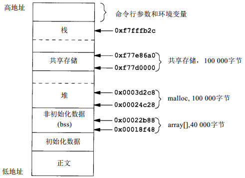
注意：共享存储段紧靠在栈之下。实际上在共享存储段和栈之间有大约几M字节的未用地址空间
/dev/zero的存储映射
共享存储可由不相关的进程使用。但是如果进程是相关的，则SVR4提供了一种不同的技术
设备/dev/zero在读时，是0字节的无限资源。此设备也接收写向它的任何数据，但忽略此数据。我们对此设备作为IPC的兴趣在于，当对其进行存储映射时，它具有一些特殊性质:
- 创建一个未名存储区，其长度是mmap的第二个参数，将其取整为系统上的最近页长
- 存储区都初始化为0
- 如果多个进程的共同祖先进程对mmap指定了MAP_SHARED标志，则这些进程可共享此存储区
程序14-12是使用此特殊设备的一个例子。它打开此/dev/zero设备，然后指定一个长整型调用mmap。一旦该存储区被映射了，就能关闭此设备。然后，进程创建一个子进程。因为在调用mmap时指定了MAP_SHARED，所以一个进程写到存储映照区的数据可由另一进程见到
然后父、子进程交替运行，使用父子进程同步函数各自对共享存储映射区中的一个长整型数加1。存储映射区由mmap初始化为0。父进程先对它进行增1操作，使其成为1，然后子 进程对其进行增1操作，使其成为2，然后父进程使其成为3……
#include "apue.h" #include <fcntl.h> #include <sys/mman.h> #define NLOOPS 1000 #define SIZE sizeof(long) /* size of shared memory area */ static int update(long *ptr) { return((*ptr)++); /* return value before increment */ } int main(void) { int fd, i, counter; pid_t pid; void *area; if ((fd = open("/dev/zero", O_RDWR)) < 0) err_sys("open error"); if ((area = mmap(0, SIZE, PROT_READ | PROT_WRITE, MAP_SHARED, fd, 0)) == MAP_FAILED) err_sys("mmap error"); close(fd); /* can close /dev/zero now that it's mapped */ TELL_WAIT(); if ((pid = fork()) < 0) { err_sys("fork error"); } else if (pid > 0) { /* parent */ for (i = 0; i < NLOOPS; i += 2) { if ((counter = update((long *)area)) != i) err_quit("parent: expected %d, got %d", i, counter); //printf("parent counter: %d \n", counter); TELL_CHILD(pid); WAIT_CHILD(); } } else { /* child */ for (i = 1; i < NLOOPS + 1; i += 2) { WAIT_PARENT(); if ((counter = update((long *)area)) != i) err_quit("child: expected %d, got %d", i, counter); //printf("child counter: %d \n", counter); TELL_PARENT(getppid()); } } exit(0); }
注意，当在update函数中，对长整型值增1时，必须使用括号，因为增加的是其值，而不是指针
匿名存储映射
4.3+BSD提供了一种类似于/dev/zero的施设，称为匿名存储映射。为了使用这种功能，在调用mmap时指定MAP_ANON标志，并将描述符指定为-1。结果得到的区域是匿名的(因为它并不通过一个文件描述符与一个路径名相结合)，并且创建一个存储区，它可与后代进程共享：
为了使上面程序应用4.3+BSD的这种特征，需要做两个修改：
- 删除/dev/zero的open条语句
将mmap调用修改成下列形式:
if ( (area = mmap(0, SIZE, PROT_READ | PROT_WRITE, MAP_ANON | MAP_SHARED, -1, 0)) == (caddr_t) -1)
共享存储 VS mmap
- mmap的优点：使用简单
- mmap的缺点：只能在相关进程间使用，不相关进程只能使用共享存储
客户机-服务器模型
下面详细说明客户机和服务器的属性，这些属性受到它们之间所使用的IPC的不同类型的影响
单向管道
客户机fork并执行所希望的服务器。在fork之前先创建两个单向管道以使数据可在两个方向传输。被执行的服务器可能是设置-用户-ID的程序，这使它具有了特权。查看客户机的实际用户ID就可以决定客户机的身份
在这种安排下，可以构筑一个“开放式服务器”。它为客户机开放文件而不是客户机调用open函数。这样就可以增加在正常的UNIX用户/组/其他许可权之上或之外的附加的许可权检查。假定服务器是设置-用户-ID程序，这给予了它附加的许可权(很可能是root许可权)。服务器用客户机的实际用户ID以决定是否给予它对所要求的文件的存取。使用这种方式，可以构筑一个服务器，它允许某种用户通常没有的存取权
因为服务器是父进程的子进程，所以它能做的一切是将文件内容传送给父进程。这种方式对一般文件工作得很好，同时也可被用于专用设备文件 但问题在于进程关系依赖：虽然父进程可向子进程传送打开文件描述符，然而子进程则不能向父进程传回一个描述符
FIFO
服务器是一个守护进程，客户机则用某种形式的IPC与其联系。可以将管道用于这种形式的客户机-服务器关系。要求有一种命名的IPC，例如FIFO。如果服务器必需将数据送回客户机，则对每个客户机都要有单独使用的FIFO。如果客户机-服务器应用程序只有客户机向服务器送数据，则只需要一个众所周知的FIFO。例如，系统V行式打印机假脱机程序使用这种形式的客户机-服务器。客户机是lp(1)命令，服务器是lpsched进程。因为只有从客户机到服务器的数据流，没有任何数据需送回客户机，所以只需使用一个FIFO
主要缺点有：
- 处理管道异常信号
- 清理已失效的FIFO
消息队列
使用消息队列则存在多种可能性：
- 在服务器和客户机之间可以只使用一个队列，使用每个消息的类型字段指明谁是消息的接受者。例如，客户机可以用类型字段为1发送它们的消息。在要求之中应包括客户机的进程ID。此后，服务器在发送响应消息时，将类型字段设置为客户机的进程ID。服务器只接受类型字段为1的消息(msgrcv的第四个参数)，客户机则只接受类型字段等于它们的进程ID的消息
- 另一种方法是每个客户机使用一个单独的消息队列。在向服务器发送第一个请求之前，每个客户机先创建它自己的消息队列，创建时使用关键字IPC_PRIVATE。服务器也有它自己的队列，其关键字或标识符是所有客户机知道的。客户机将其第一个请求送到服务器的众所周知的队列上，该请求中应包含其客户机消息队列的队列ID。服务器将其第一个响应送至客户机队列，此后的所有请求和响应都在此队列上交换
第二种技术的缺点是：
- 每个客户机专用队列通常只有一个消息在其中或者是对服务器的一个请求，或者是对客户机的响应。这似乎是对有限的系统资源(消息队列)的浪费，可以用一个FIFO来代替
- 服务器需从多个队列读消息。对于消息队列，select和poll都不起作用
实现
使用消息队列的这两种技术都可以用共享存储段和同步方法(信号量或记录锁)实现。使用共享存储段的问题是一次只能有一个消息在共享存储段中（类似于队列限制为只能有一个消息）。为此，在使用共享存储IPC时，通常每个客户机使用一个共享存储段
缺陷
消息队列的问题在于：服务器如何准确地标识客户机。除非服务器正在执行一种非特权操作，否则服务器知道谁是客户机是很重要的。例如，若服务器是一个设置-用户-ID程序，就有这种要求。虽然，所有这几种形式的IPC都经由内核，但是它们并未提供任何措施使内核能够标识发送者
对于消息队列，如果在客户机和服务器之间使用一个专用队列(于是一次只有一个消息在该队列上)，那么队列的msg_lspid包含了对方进程的进程ID。但是当客户机将请求发送给服务器时，我们想要的是客户机的有效用户ID，而不是它的进程ID。现在还没有一种可移植的方法，在已知进程ID情况下用其可以得到有效用户ID。由于任意进程只要拿到标识符(而无需其它授权)就可以读取消息(使得消息出队)，因此需要针对此专门设计安全措施
安全措施
同样的技术可用于FIFO、消息队列、信号量或共享存储。下面的说明具体针对FIFO：
客户机必须创建它自己的FIFO，并且设置FIFO的文件存取许可权，使得只允许用户-读，用户-写。假定服务器具有超级用户特权或者它很可能并不关心客户机的真实标识，所以服务器仍可读、写此FIFO。当服务器在众所周知的FIFO上接受到客户机的第一个请求时(它应当包含客户机专用FIFO的标识)，服务器调用针对客户机专用FIFO的stat或fstat。服务器所采用的假设是客户机的有效用户ID是FIFO的所有者(stat结构的st_uid字段)。服务器验证该FIFO只有用户-读、用户-写许可权。服务器还应检查是该FIFO的三个时间量(stat结构中的st_atime，st_mtime和st_ctime字段)，要检查它们与当前时间是否很接近(例如不早于当前时间15秒或30秒)。如果一个有预谋的客户机可以创建一个FIFO，使另一个用户成为其所有者，并且设置该文件的许 可权为用户-读和用户-写，那么在系统中就存在了其他基础性的安全问题
为了在系统VIPC中应用这种技术，回想一下与每个消息队列、信号量、以及共享存储段相关的ipc_perm结构，其中cuid和cgid字段标识IPC结构的创建者。以FIFO为例，服务器应当要求客户机创建该IPC结构，并使客户机将存取权设置为只允许用户-读和用户-写。服务器也应检验与该IPC相关的时间量与当前时间是否很接近(因为这些IPC结构在显式地删除之前一直存在)
总结
- 掌握匿名管道和FIFO技术，因为它们清晰简单
- 尽量不使用消息队列和信号量，而以流管道和记录锁代替之
- 可以用mmap代替共享内存
尽量用套接字代替System V的三种IPC